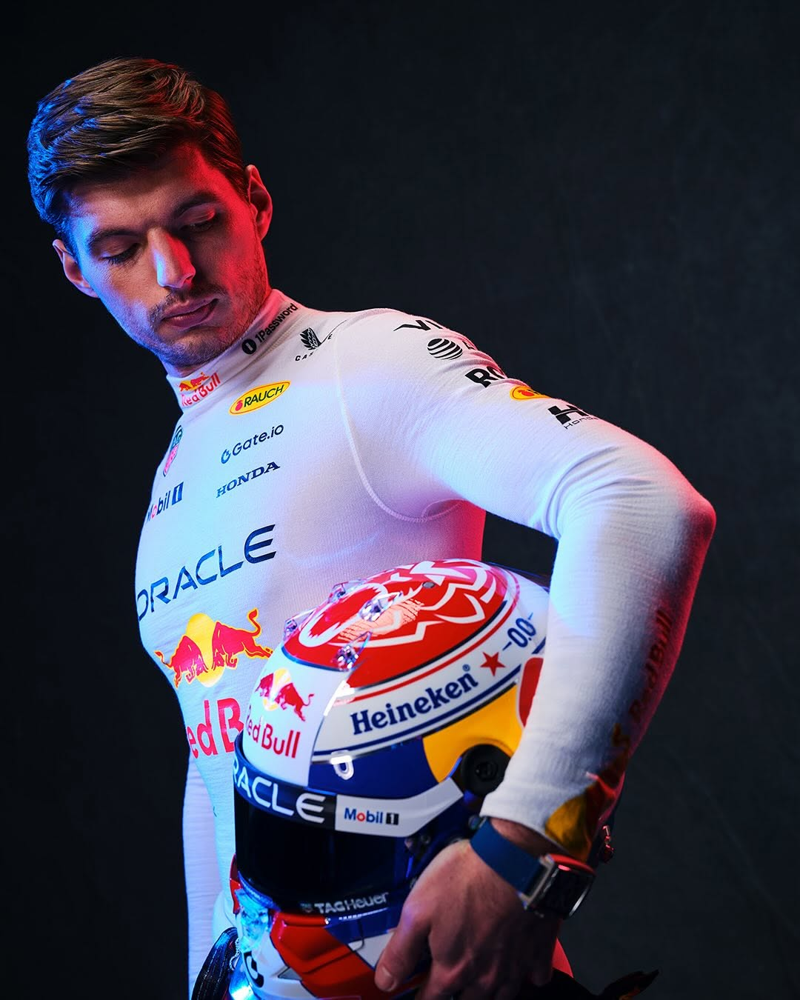

Formula 1 2025 akan segera dimulai. Grid F1 2025 kali ini akan
sedikit berbeda karena banyak disajikan hal-hal baru di grid,
diantaranya para rookie yang perdana menjelajah mobil F1. Selain itu
persaingan yang semakin ketat di tahun terakhir era
Ground Effect sebelum beralih ke regulasi baru di 2026.
Hal ini layak untuk dinantikan mengingat semua tim sangat kompetitif
musim ini sekaligus dihadapkan dengan regulasi 2026 yang di depan
mata. Akankah McLaren akan kembali memenangkan gelar Konstruktor
2025 atau rival lain yang justru memecah rekor baru di musim ini?
Kita saksikan bagaimana musim ini berjalan.
Perkembangan sebelum Era baru 2026
Musim 2025 menandai era baru dalam Formula 1 dengan perubahan
signfikan pada aerodinamika dan sistem lainnya. Efisiensi bahan
bakar berkelanjutan meningkat hingga mencapai 75%, menunjukkan
komitmen F1 dan FIA terhadap kelanjutan olahraga ini.
Beberapa perubahan teknsi utama 2025 meliputi banyak hal, yakni:
Baterai ERS baru dengan kapasitas energi 20% lebih meningkat
Aturan aerodinamika yang lebih ketat untuk mengurangi efek
Dirty Air dan meningkatkan pertarungan di grid
Batas minimum berat mobil yang dikurangkan menjadi 790 kg
Peningkatan jumlah balapan sprint menjadi 10 event sirkuit juga
menambah variasi strategi dari tim dan pembalap dan sistem poin baru
untuk balapan sprint memberikan lebih besar dampak bagi pembalap di
grid.
F1 Teams 2025
Red Bull Racing
Red Bull Racing memasuki musim 2025 sebagai tim yang masih
menjadi kandidat dominan di Formula 1. Setelah sukses besar
dalam beberapa musim terakhir. Mobil terbaru mereka, RB21,
menghadirkan inovasi aerodinamis mutakhir yang semakin
meningkatkan performa di lintasan, didukung oleh power unit
Honda yang telah dioptimalkan untuk efisiensi dan tenaga
maksimal.
Max Verstappen tetap menjadi andalan utama tim, dengan gaya
balap agresif dan konsistensinya dalam mengamankan kemenangan.
Sementara itu, kehadiran Liam Lawson berperan sebagai rekan
setim yang solid, siap memberikan poin penting dalam perebutan
gelar konstruktor.
McLaren
McLaren F1 memasuki musim 2025 dengan ambisi besar setelah
menunjukkan peningkatan signifikan dalam beberapa tahun terakhir
yang dibuktikan dengan kemenangan gelar konstruktor musim lalu.
Mobil McLaren MCL39 hadir dengan desain aerodinamis yang lebih
efisien serta peningkatan pada power unit Mercedes yang mereka
gunakan.
Lando Norris, yang semakin matang sebagai pembalap, berambisi
untuk meraih Gelar juara dunia pertamanya, sementara Oscar
Piastri terus menunjukkan bakatnya sebagai salah satu pembalap
muda paling menjanjikan di grid 2025.
Scuderia Ferrari
Ferrari memasuki musim 2025 dengan semangat baru setelah
berhasil merekrut juara dunia tujuh kali, Lewis Hamilton, yang
bergabung dengan tim asal Maranello setelah bertahun-tahun
membela Mercedes. Dengan kombinasi pengalaman luar biasa
Hamilton dan kecepatan alami Leclerc, Ferrari berharap dapat
kembali ke jalur kemenangan dan mengakhiri puasa gelar juara
dunia yang telah berlangsung sejak 2007.
Mobil Ferrari SF-25 hadir dengan peningkatan signifikan pada
sisi aerodinamika serta efisiensi mesin yang dikembangkan di
pabrik mereka di Italia.Hamilton, yang terkenal dengan
kemampuannya mengembangkan mobil, diyakini akan membantu
Ferrari dalam pengembangan jangka panjang. Dengan kombinasi
pengalaman, kecepatan, dan ambisi besar, musim 2025 bisa
menjadi tahun di mana Ferrari kembali berjaya di puncak
Formula 1.
Mercedes AMG Petronas
Mercedes memasuki musim 2025 dengan era baru setelah kepergian
Lewis Hamilton ke Ferrari, membuka jalan bagi Andrea Kimi
Antonelli, pembalap muda berbakat dari akademi Mercedes, untuk
naik ke Formula 1. Antonelli, yang telah menunjukkan potensi
luar biasa di Formula 2, bergabung dengan George Russell dalam
upaya membawa tim asal Brackley kembali ke puncak. Tim di
bawah kepemimpinan Toto Wolff bertekad untuk kembali bersaing
dengan Red Bull dan Ferrari dalam perebutan gelar juara dunia.
George Russell kini menjadi pemimpin tim, dengan pengalaman
yang semakin matang dan ambisi besar untuk meraih kemenangan
reguler. Sementara itu, Antonelli membawa semangat muda dan
gaya balap agresif yang diharapkan dapat memberikan kejutan di
grid. Dengan kombinasi pengalaman dan bakat muda, musim 2025
bisa menjadi awal dari babak baru dalam perjalanan Mercedes di
Formula 1, dengan harapan mengembalikan dominasi mereka di era
baru ini.
HAAS
Haas memasuki musim 2025 dengan kombinasi pengalaman dan bakat
muda dalam diri Esteban Ocon dan Oliver Bearman. Ocon, yang
sebelumnya membela Alpine, membawa pengalaman bertahun-tahun
di F1 dan diharapkan dapat menjadi pemimpin tim dalam
pengembangan mobil VF-25. Sementara itu, Bearman, lulusan
akademi Ferrari, diberikan kesempatan penuh untuk membuktikan
kemampuannya setelah beberapa kali tampil impresif sebagai
pembalap cadangan. Haas tetap mengandalkan power unit Ferrari
dan berharap dengan kombinasi ini mereka bisa lebih kompetitif
di lini tengah, serta secara konsisten bersaing untuk poin di
setiap balapan.
Aston Martin
Aston Martin tetap menjadi tim ambisius yang berusaha menembus
papan atas di musim 2025. Dengan investasi besar dari pemilik
tim, Lawrence Stroll, mereka terus mengembangkan infrastruktur
dan memperkuat pengembangan teknis mobil mereka. Mobil AMR25
hadir dengan berbagai inovasi baru, termasuk peningkatan
aerodinamika yang terinspirasi dari konsep Red Bull serta
efisiensi dalam manajemen ban. Fernando Alonso, sebagai
pembalap senior, terus menjadi pemimpin dalam tim, sementara
rekan setimnya berusaha memperkuat posisi mereka dalam
persaingan perebutan podium. Dengan dukungan penuh dari pabrik
Silverstone yang semakin maju, Aston Martin siap untuk menjadi
ancaman serius bagi tim-tim besar di musim ini.
Williams Racing
Williams mendapatkan dorongan besar dengan bergabungnya Carlos
Sainz, yang meninggalkan Ferrari setelah bertahun-tahun
membela tim merah. Kehadiran Sainz menandai era baru bagi
Williams, dengan kombinasi pengalaman, ketahanan mental, dan
kemampuan balapnya yang luar biasa. Dengan power unit Mercedes
dan strategi pengembangan yang lebih agresif, tim yang
bermarkas di Grove ini berharap bisa kembali ke barisan depan
lini tengah dan bahkan menantang podium di beberapa balapan.
Sainz, yang dikenal sebagai pembalap yang kuat dalam strategi
dan manajemen ban, akan menjadi kunci dalam perjalanan
kebangkitan Williams di 2025.
Alpine F1 Team
Alpine memasuki musim 2025 dengan visi jangka panjang dan
keputusan berani untuk mempromosikan Jack Doohan sebagai
pembalap utama. Doohan, lulusan akademi Alpine, telah
menunjukkan potensinya dalam berbagai tes dan balapan di F2,
serta memiliki pengalaman sebagai pembalap cadangan Alpine.
Tim yang berbasis di Enstone ini masih menghadapi tantangan
dalam pengembangan mesin Renault yang mereka gunakan, namun
dengan perubahan strategi dan fokus pada pembalap muda, Alpine
berharap dapat membangun fondasi untuk kembali ke puncak dalam
beberapa tahun mendatang.
Stake F1 Team
Stake F1 memasuki era baru dengan susunan pembalap yang unik.
Nico Hülkenberg, yang kembali membalap secara penuh, serta
Gabriel Bortoleto, rookie berbakat yang datang dari Formula 2.
Hülkenberg, dengan pengalaman luasnya, diharapkan dapat
memberikan stabilitas dan membantu pengembangan mobil C45.
Sementara itu, Bortoleto, sebagai juara F3 dan salah satu
talenta muda terbaik dari akademi McLaren, mendapat kesempatan
besar untuk membuktikan dirinya di level tertinggi. Dengan
power unit Ferrari dan pengembangan teknis yang lebih baik,
Stake F1 berharap dapat menjadi ancaman di lini tengah dan
meraih poin secara reguler.
Visa Cash App RedBull
Tim junior Red Bull, VISA RB, memberikan kesempatan besar
kepada Isack Hadjar, lulusan akademi Red Bull yang telah
menunjukkan performa luar biasa di Formula 2. Hadjar membawa
semangat muda dan agresivitas balap yang cocok dengan filosofi
tim dalam membina pembalap potensial. Dengan semakin eratnya
kolaborasi dengan Red Bull Racing, mobil RB21 dirancang dengan
pendekatan aerodinamika yang lebih canggih. Hadjar diharapkan
bisa menunjukkan kecepatannya sejak awal musim, dan tim ini
berambisi untuk terus bersaing di papan tengah serta mencetak
hasil kejutan di beberapa balapan.
Pembalap F1 2025
Red Bull Racing

Max Verstappen
Belanda
Nomor : 1
Juara dunia 4x yang terus menunjukkan konsistensi dan kemampuan
yang luar biasa. Verstappen masih menjadi favorit dominasi di F1
2025.
Liam Lawson
Selandia Baru
Nomor : 30
Setelah dipilih menggantikan Sergio Perez di F1 2025, Lawson
menjadi pendukung solid sekaligus tantangan bagi Max Verstappen
di grid 2025.
Mercedes-AMG Petronas
George Russell
Inggris Raya
Nomor : 63
Memasuki musim ke-4 bersama Mercedes, Russell kini mengambil
peran pemimpin tim setelah ditinggal Hamilton. Kualifikasi yang
mengesankan dan performa balapan yang konsisten menjadi karakter
utamanya.
Kimi Antonelli
Italia
Nomor : 87
Rookie berbakat pengganti Lewis Hamilton dari program junior
Mercedes yang dipromosikan setelah performa mengesankan di
Formula 2. Antonelli dianggap sebagai salah satu talenta
terbesar generasi muda.
Scuderia Ferrari
Charles Leclerc
Monaco
Nomor : 16
Memasuki tahun ketujuh bersama Ferrari, Leclerc terus
menunjukkan kecepatan luar biasa terutama di kualifikasi.
Kontrak jangka panjang menegaskan posisinya sebagai salah satu
pilar tim.
Lewis Hamilton
Inggris Raya
Nomor : 44
Transfer sensasional ke Ferrari membawa perubahan besar setelah
lebih dari satu dekade bersama Mercedes. Hamilton bertekad
membuktikan bahwa di usia 40 tahun, ia masih mampu berjuang
untuk gelar juara dunia kedelapan.
McLaren F1 Team
Lando Norris
Inggris Raya
Nomor : 4
Setelah meraih kemenangan pertama di 2024, Norris semakin
percaya diri dan konsisten untuk meraih gelar 2025. Kolaborasi
dengan Piastri menciptakan salah satu line-up termuda dan
berbakat di grid.
Oscar Piastri
Australia
Nomor : 81
Pindah ke McLaren setelah konflik dengan Alpine, Piastri
menunjukkan taringnya sebagai seorang rookie menemani Norris.
Piastri menunjukkan kemampuan adaptasi yang cepat dan matang
melebihi usianya yang masih muda.
HAAS
Esteban Ocon
Perancis
Nomor : 31
Esteban Ocon menjadi sosok penting di F1, bergabung dengan HAAS
pada musim 2025. Pengalaman bertahun-tahun di Alpine dapat
membawa stabilitas dan kecepatan ke tim yang sedang berusaha
naik ke papan tengah. Konsistensinya seperti di Brazil 2024 dan
kemampuannya dalam mengelola balapan panjang menjadikannya aset
berharga bagi HAAS.
Oliver Bearman
Inggris Raya
Nomor : 87
Sebagai salah satu talenta muda menjanjikan, Oliver Bearman
akhirnya mendapatkan kursi penuh di Formula 1 bersama HAAS.
Setelah beberapa balapan mengesankan dan mencetak poin perdana
bersama Ferrari sebagai Reserve Driver, Bearman diharapkan
membawa semangat dan harapan baru ke tim dan menjadikannya
sebagai bintang masa depan.
Aston Martin
Fernando Alonso
Spanyol
Nomor : 14
Alonso masih menjadi ikon di F1 2025 bersama Aston martin. Meski
usianya paling tua di grid, Alonso terus membuktikan
pengalamannya dalam balapan yang membuatnya tetap kompetitif dan
menjadi ujung tombak Aston Martin.
Lance Stroll
Kanada
Nomor : 18
Stroll melanjutkan proyek ayahnya Lawrence Stroll bersama Aston
Martin di 2025. Stroll semakin matang dalam menghadapi kompetisi
di grid 2025 yang semakin memanas. Diharapkan performanya
semakin meningkat untuk mendongkrak posisi Aston Martin di 2025.
Williams Racing
Carlos Sainz
Spanyol
Nomor : 55
Setelah meninggalkan Ferrari, Sainz kini bergabung bersama
Williams untuk musim 2025. Pengalaman yang luas dan speed yang
terbukti, ia ingin membantu tim kembali ke era kejayaan
Williams. Kemampuannya bersama Ferrari menjadi aset utama bagi
Williams di 2025.
Alexander Albon
Thailand
Nomor : 23
Albon masih setia bersama Williams di 2025, berperan sebagai
leader tim dalam fase kebangkitan. Gaya balapan yang agresif, ia
menunjukkan kualitasnya yang baik di dalam grid. Kolaborasinya
bersama Sainz bisa menjadi dorongan kuat bagi TIm.
Alpine F1 Team
Pierre Gasly
Prancis
Nomor : 10
Gasly terus bertahan bersama Alpine, membawa pengalaman dan
leadership ke tim Prancis ini. Sebagai salah satu pemenang Grand
Prix, ia mampu untuk memberi kejutan kembali di grid 2025
bersama Doohan di Alpine.
Jack Doohan
Australia
Nomor : 7
Jack Doohan bersama kursi resminya di F1 bersama Alpine,
menggantikan peran Esteban Ocon. Sebagai pembalap muda, ia
memiliki potensi yang diharapkan mampu menjadi masa depan tim.
Stake F1 Team
Nico Hulkenberg
Jerman
Nomor : 27
Setelah beberapa musim bersama HAAS, Nico kini berkompetisi
bersama Stake di 2025. Dikenal sebagai senior dan berpengalaman,
ia diharapkan membawa stabilitas dan hasil positif untuk tim
Stake.
Gabriel Bortoleto
Brazil
Nomor : 5
Bortoleto melakukan debut penuhnya di F1 bersama Stake setelah
karir gemilang di Formula 2. Ia berbakat dan memiliki tekad kuat
untuk berkembang di F1 diawali dengan karirnya bersama Stake F1.
Visa Cash App RB
Yuki Tsunoda
Jepang
Nomor : 22
Yuki Tsunoda menjadi andalan bagi tim VCARB di musim 2025. Ia
kini lebih matang dan konsisten serta gaya balapan yang agresif
menjadikannya ancaman serius di klasemen tengah.
Isack Hadjar
Perancis
Nomor : 6
Setelah cukup sukses di Formula 2, Hadjar mendapatkan kursi di
F1 bersama VCARB dan dikenal dengan reflek dan kecepatannya yang
gila di usianya yang muda. Ini menjadikannya berpotensi bersama
VCARB.